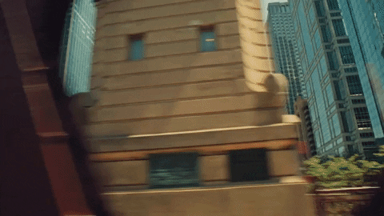
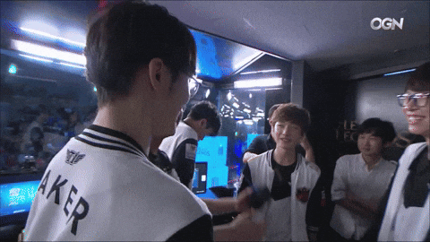
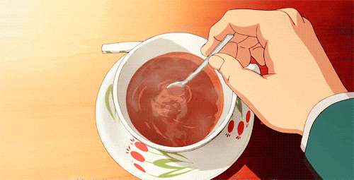

Hi! I’m YiQi Liang.
I’m a Honors Marketing student and a creative at heart. I’m located in Windy City

Chicago. My goal is to collaborate with cool people to create amazing things
In my freetime, you'll find me
at a cafe, journaling, or gaming